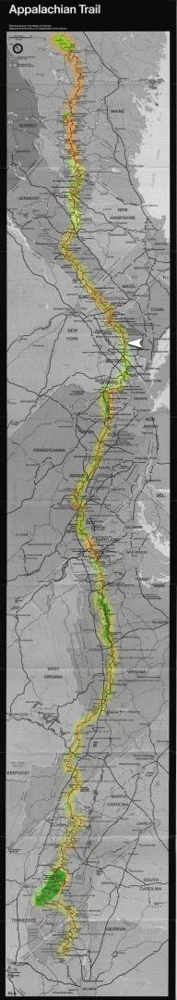

| Home | The Fox | Statistics | Maps | Churches |
StatusConfirmed - Last contact with the Fox was at:Confirmed - Connecticut-New York Line Confirmed - 1431.8 miles complete (66.28%) Confirmed - 728.4 miles to go (33.72%) Massachusetts[1 July 1999] On Thursday the Fox reported in briefly from the state of Massachusetts, only three states from the end of the Trail (with Vermont, New Hampshire, and Maine remaining). He was visiting Great Barrington, which he had reached from the Trail's intersection withChurch in New York?[26 June 1999] Today (Saturday) Bobby reported in from Pawling, New York. He states that he has crossed Conneticut |

Legend
|